一个贴在屏幕边缘的 Windows 悬浮窗：看下班、看日程、看工资，还能用 5 位数字找同事、用 5 位字符开一个对话发两句「小纸条」。接不接飞书都能用；不联网时按班次推算。v3.7.0 起可以整块换一套界面风格（六套）；v3.8 小纸条历史保留 16 条、一屏 8 条可滚动；未读时卡片左上角每 5 秒快闪两下。
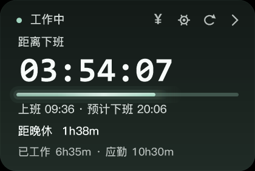
工作中 / 已达标 / 还没打卡 / 休息日 / 已下班
距下班、距上班；最后 1 小时切「分:秒.厘秒」
今日时间进度；最后 30 分钟自动变彩色
按打卡 + 应勤推算，固定在第二行
可关；显示「距午休 / 午休中 / 距晚休」
最后一行提示工时是否达标
托盘菜单可看；提醒前会提前弹卡片
右上角 ✈，见第 03 节
右上角 ¥，见第 02 节
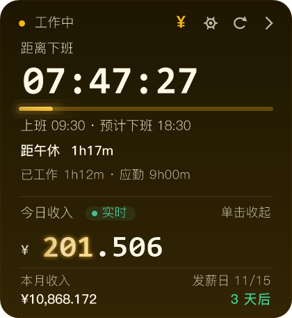
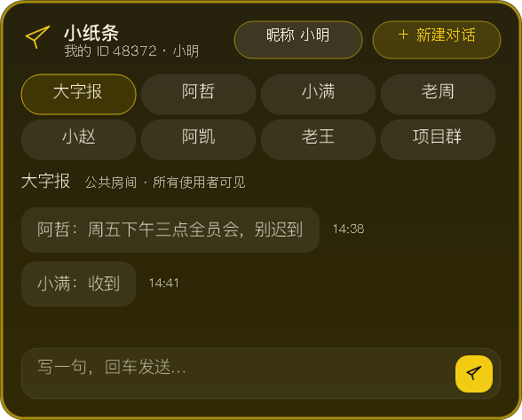
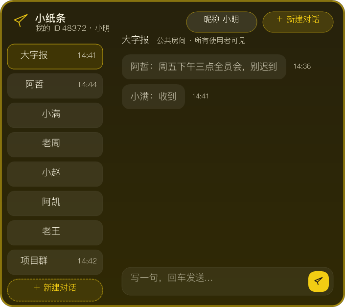
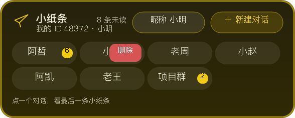
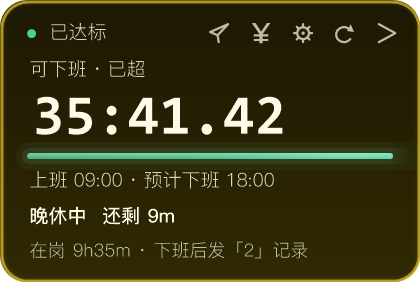
第一次启动生成 5 位数字；设置 → 纸条 可复制 / 重新生成
5 位纯数字 = 和这个 ID 的人单独对话（自动查在线）；其它任意 5 位字符 = 对话码，别人输入同一个码就进同一个对话
设置 → 纸条「本机 ID 与昵称」里填（≤12 字）；别人按你的 5 位数字 ID 添加对话，会自动拿到并直接显示昵称
v3.6：面板里「＋ 新建对话」左边那颗昵称胶囊，双击就地改本机昵称，不用进设置页；单击只提示一句
对话码群聊里，别人的消息前缀直接是「昵称：内容」，没填昵称才退回「ID 12345：」
本机给对话写的备注优先级最高：备注 ＞ 对方昵称 ＞ ID / 对话码
双击对话名字就地改（≤8 字）；这段备注会优先显示在对话列表和聊天头部
历史行左边、双栏标题里始终能看到对方 ID，看到就能用「＋ 新建对话」按 5 位数字建一对一
点 / hover 对话看最后一条 + 输入框；点输入框长高看历史（一屏 8 条，最多 16 条，滚轮往上翻）
v3.6：抽屉式列表页一屏两排（4×2 = 8 个，≤4 个对话时还是一排），滚轮往下翻，右边有滚动提示；双栏竖排一屏 5 行
右键某个对话 → 右半边出红色「删除」，点一下连本机这段 16 条消息一起删
回车发一行（最多 200 字），发完输入框留着可以接着打；未读角标同步
卡片圆角边框连闪 2 次；没读时卡片左上角每 5 秒快闪两下（大小卡片都有），读完即停
抽屉式 A / 极简双栏 C，设置 → 纸条 里切，数据一致
| 类型 | 从哪来 | 能不能改 |
|---|---|---|
| 固定日程 | 午休 / 晚休 / 下班 + 自建重复日程（每天 / 单周 / 双周） | 设置 → 固定，每条可单独配色 |
| 飞书会议 | 飞书日历 calendar +agenda，只读 | 设置 → 提醒 → 读取飞书日程 |
| 普通日程 | 手动添加：胶囊菜单「新增日程」或设置页 | 随便改 |
| Outlook | .ics 订阅 / 本地 .ics / Graph 登录；可多份日历 | 只读，跟着订阅走 |
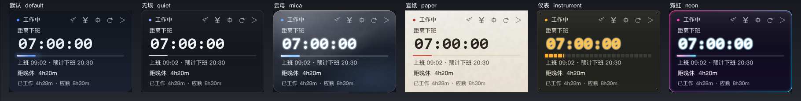
| 风格 | 定位 | 配色 / 质感 | 进度条 | 装饰 / 细节 |
|---|---|---|---|---|
| 默认 Default | 原来的样子，一直可用 | 39 套配色主题任选 + 背景风格（纯色 / 磨砂玻璃） | 原有发光进度条 + 流动光带 | 卡片外呼吸柔光 + 沿边流光（v3.6 全套） |
| 无垠 Quiet | 最安静的一档 | 近黑底 + 1px 细线描边，等宽数字 | 2 DIP 细线，不发光 | 无光晕 / 扫边；卡片不填底、只留顶线 |
| 云母 Mica | 磨砂玻璃完整版 | 半透明磨砂 + 柔光雾气，桌面透出来 | 5 DIP 圆角渐变 + 柔光 | 玻璃边缘高光；小纸条 / 胶囊同款 |
| 宣纸 Ink | 浅色纸感，中文味 | 米白纸底 + 宋体标题 + 朱砂强调 | 3 DIP 朱砂渐变 | 纸纤维颗粒 + 朱砂「班」印章 |
| 仪表 Instrument | 金属仪表盘 | 深灰金属 + 琥珀数码读数 | 8 DIP，24 格分刻 | 卡片四角 4 颗小螺丝 |
| 霓虹 Neon | 强对比赛博夜色 | 近黑底 + 品红 × 青双色辉光 | 4 DIP 品红→青 + 双层辉光 | 渐变描边、数字发光 |
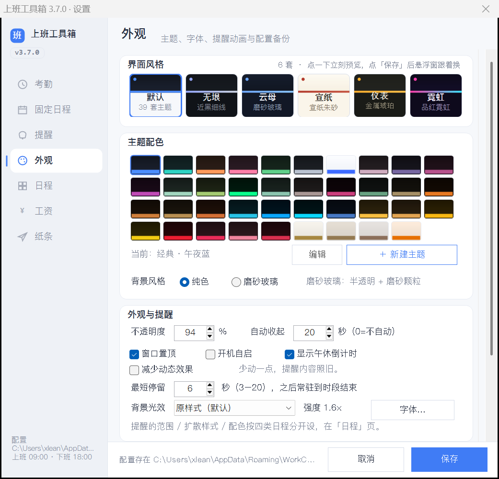
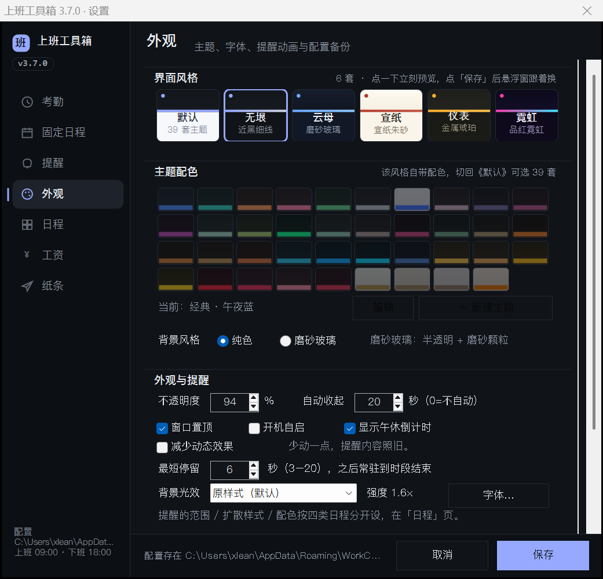
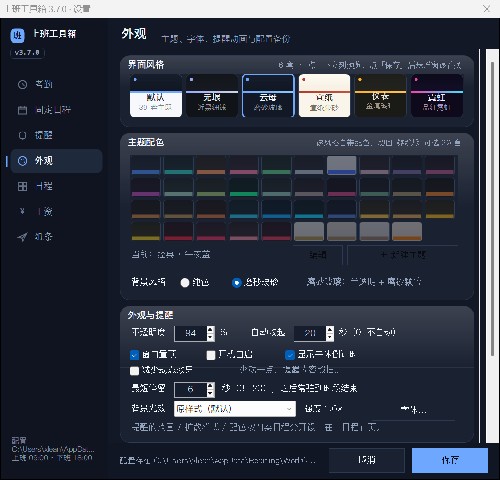
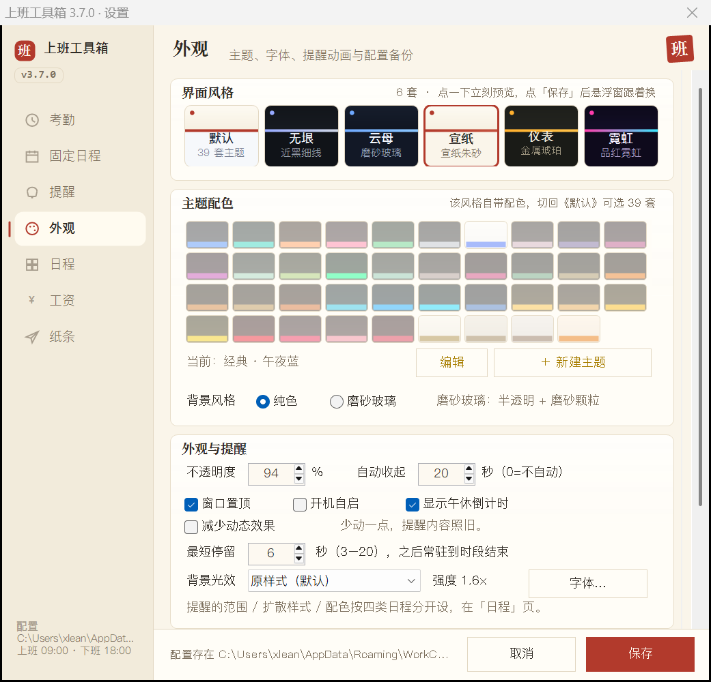
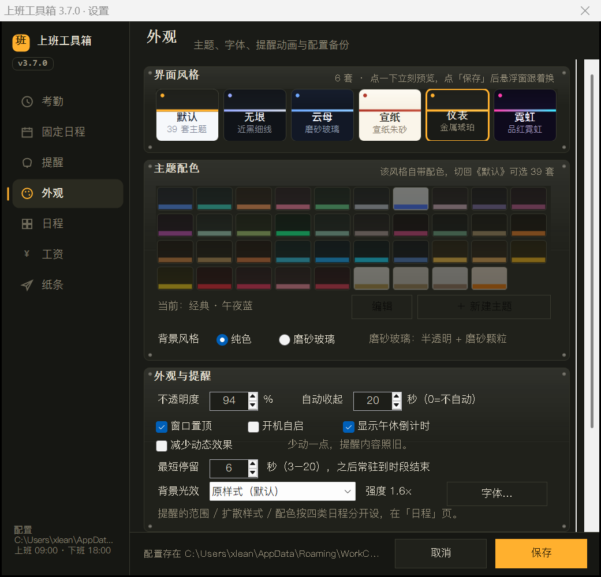
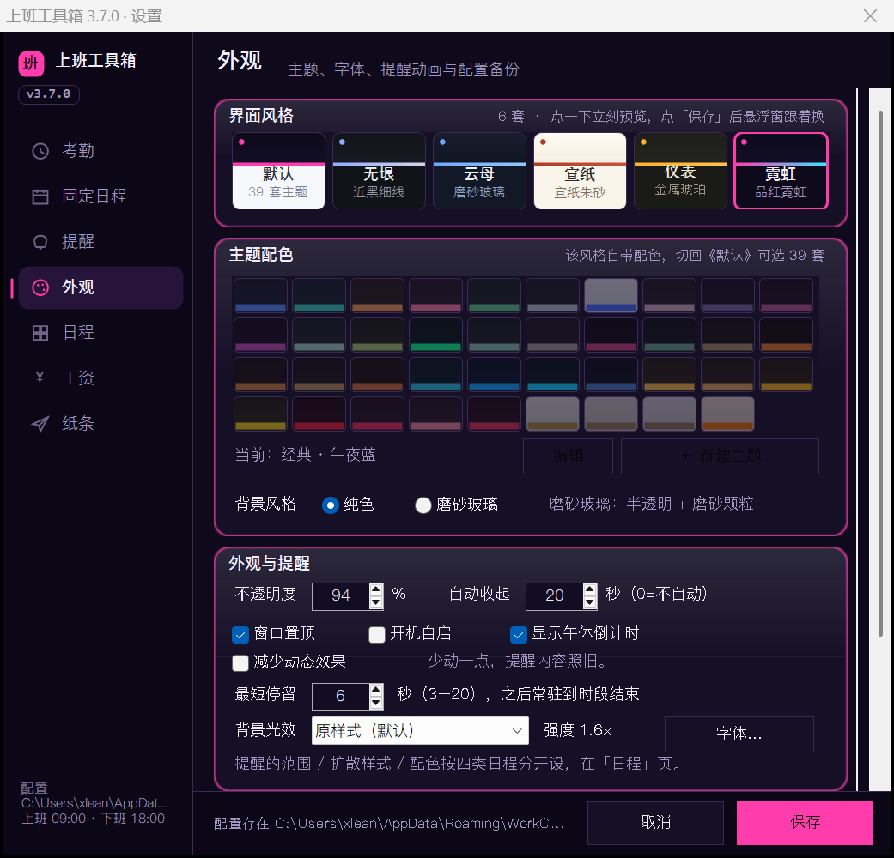
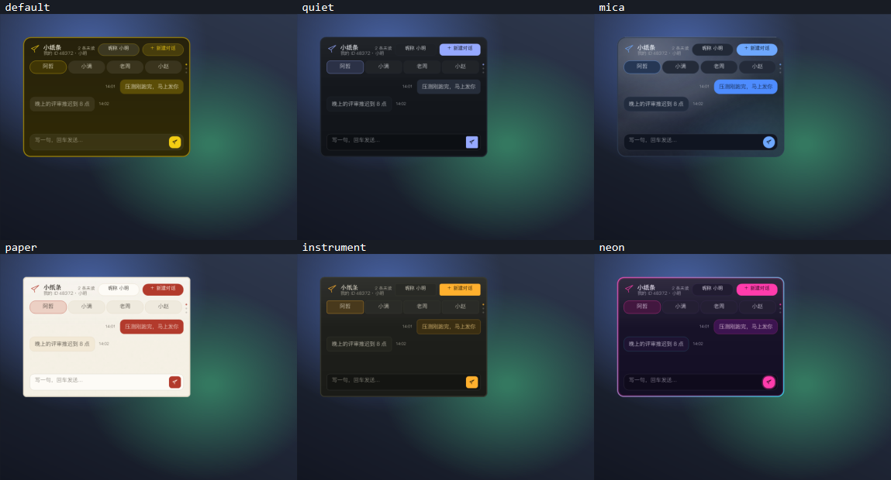
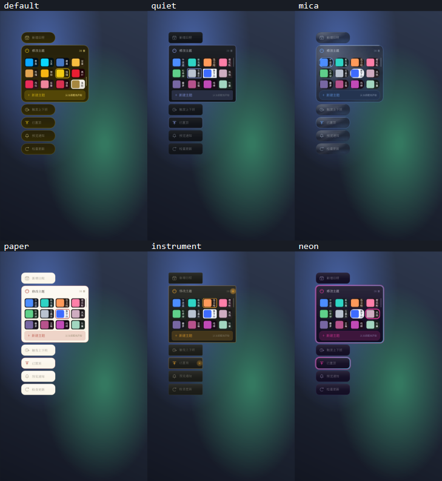
默认「临时日程」+30 分钟；标题/地点可改，+15/+30/+60 或保存直接建。
4×3 色卡一屏 12 张，滚轮翻页；点一张立刻换，也能新建主题。
「上班打卡 / 下班打卡」，对应飞书发 1 / 2，先确认再发。
点一下切换；胶囊文字变成「已置顶」，再点取消。
上班 / 午休 / 飞书会议 / Outlook / 普通日程 / 下班提醒，选一类立刻真播一遍，只放一遍。
自动查 GitHub 最新版本；有新版本可全量更新（下载 exe → 替换 → 自动重启）。